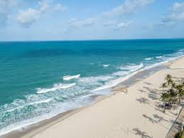

Fortaleza no Ceará tem praias lindas e sol o ano todo!!!
Uma das praias mais famosas de Fortaleza é a Praia do Futuro. Ela é conhecida por sua extensa faixa de areia, águas quentes e pelas barracas de praia que oferecem boa gastronomia, música ao vivo e infraestrutura completa para passar o dia com conforto.
